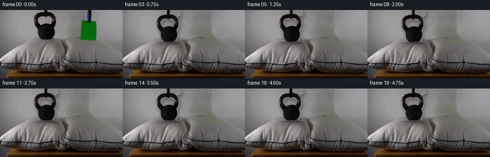
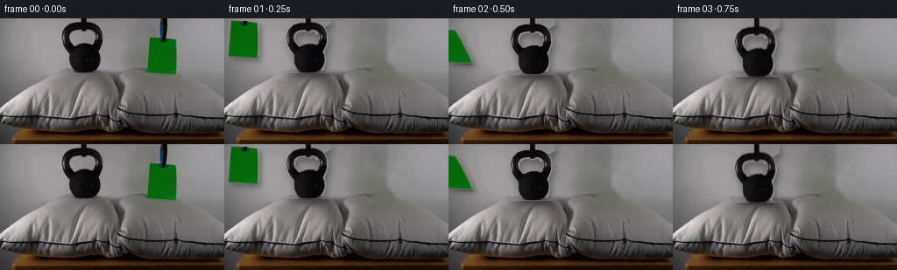
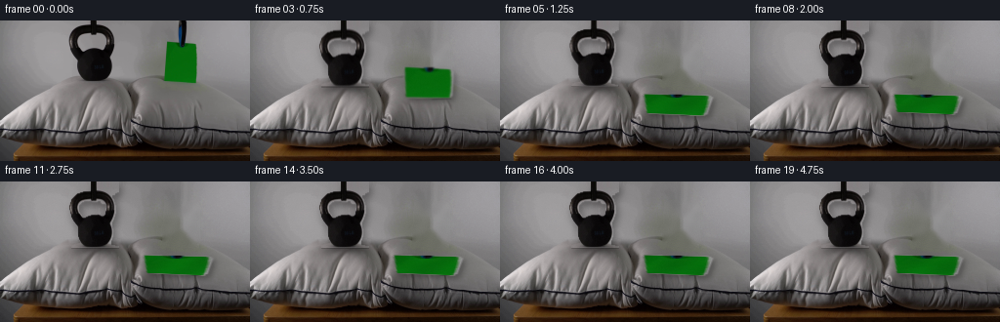
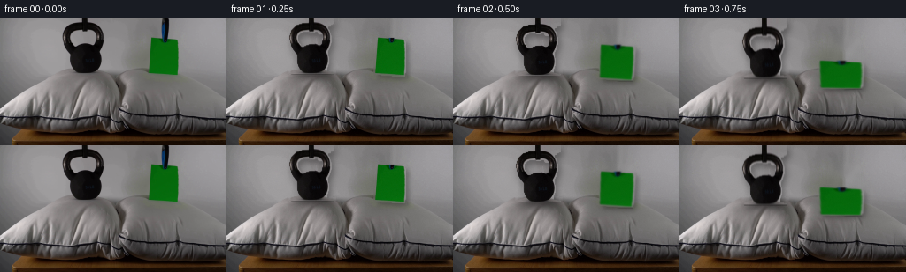
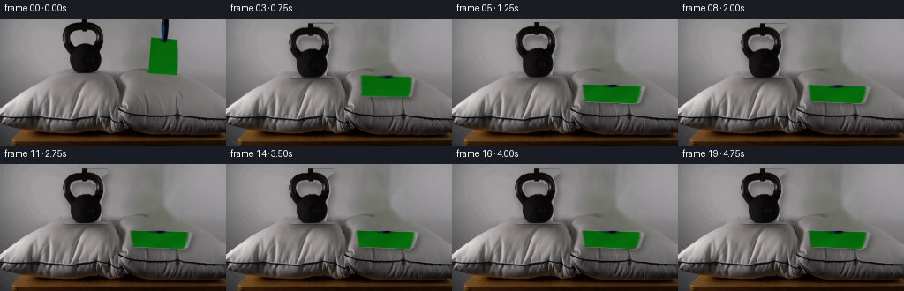
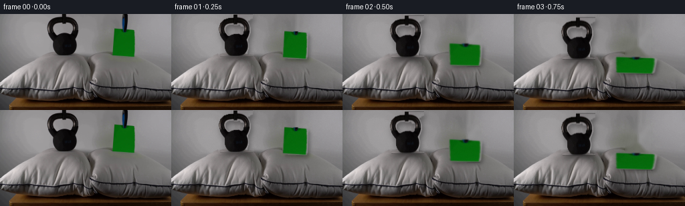

CODING AGENTS AS PIXEL WORLD MODELS
traex/DeepSeek-V4.1-Flash · 0194
点击播放 · 原生 RGB 像素
逐轮保存的候选
回放视频、检查图与代码变化。
每份候选均可单独播放。实际图片检查记录在下方工具轨迹中。
候选 01播放与检查图
点击播放 · 原生 RGB 像素


展开代码变化
--- 上一保存版本
+++ 本次保存版本
@@ -0,0 +1,373 @@
+from pathlib import Path
+
+import cv2
+import numpy as np
+from PIL import Image
+
+import artifact_io
+
+
+ROOT = Path(__file__).resolve().parent
+W, H = 256, 144
+N_FRAMES = 20
+FPS = 4
+
+KETTLE_CROP = (64, 0, 122, 63)
+PAPER_CROP = (163, 19, 206, 66)
+PAPER_SRC_QUAD = np.float32(
+ [[171.0, 22.0], [200.0, 25.0], [201.0, 62.0], [168.0, 61.0]]
+)
+PAPER_REST_QUAD = np.float32(
+ [[148.0, 75.5], [212.0, 77.5], [209.0, 95.0], [150.5, 93.0]]
+)
+
+
+def largest_component(mask, seed):
+ count, labels = cv2.connectedComponents(mask.astype(np.uint8), connectivity=8)
+ if count <= 1:
+ return mask.astype(np.uint8)
+ sy, sx = seed
+ label = labels[sy, sx]
+ if label == 0:
+ sizes = np.bincount(labels.ravel())
+ sizes[0] = 0
+ label = int(np.argmax(sizes))
+ return (labels == label).astype(np.uint8)
+
+
+def build_masks(frame):
+ gray = cv2.cvtColor(frame, cv2.COLOR_RGB2GRAY)
+ x0, y0, x1, y1 = KETTLE_CROP
+ local_gray = gray[y0:y1, x0:x1]
+ dark = (local_gray < 136).astype(np.uint8)
+ dark = cv2.morphologyEx(dark, cv2.MORPH_CLOSE, np.ones((3, 3), np.uint8))
+ kettle_local = largest_component(dark, (45, 30))
+ kettle_local = cv2.morphologyEx(
+ kettle_local, cv2.MORPH_CLOSE, np.ones((2, 2), np.uint8)
+ )
+ kettle = np.zeros((H, W), np.uint8)
+ kettle[y0:y1, x0:x1] = kettle_local
+
+ rgb = frame.astype(np.int16)
+ r, g, b = rgb[:, :, 0], rgb[:, :, 1], rgb[:, :, 2]
+ green = ((g > r + 14) & (g > b + 12) & (g > 30)).astype(np.uint8)
+ contours, _ = cv2.findContours(green, cv2.RETR_EXTERNAL, cv2.CHAIN_APPROX_SIMPLE)
+ paper_contour = max(contours, key=cv2.contourArea)
+ hull = cv2.convexHull(paper_contour)
+ paper = np.zeros((H, W), np.uint8)
+ cv2.fillConvexPoly(paper, hull, 1)
+ paper = cv2.dilate(paper, np.ones((2, 2), np.uint8))
+ return kettle, paper
+
+
+def reconstruct_plate(frame, kettle, paper):
+ plate = frame.astype(np.float32).copy()
+ object_mask = np.maximum(kettle, paper)
+ plate_mask = cv2.dilate(object_mask, np.ones((5, 5), np.uint8))
+ plate_mask[0:24, 181:192] = 1
+
+ for y in range(H):
+ row_mask = plate_mask[y].astype(bool)
+ if not row_mask.any():
+ continue
+ valid = np.flatnonzero(~row_mask)
+ if len(valid) < 2:
+ continue
+ starts = np.flatnonzero(row_mask & np.r_[True, ~row_mask[:-1]])
+ ends = np.flatnonzero(row_mask & np.r_[~row_mask[1:], True])
+ for start, end in zip(starts, ends):
+ left = valid[valid < start]
+ right = valid[valid > end]
+ if len(left) and len(right):
+ xa, xb = int(left[-1]), int(right[0])
+ t = np.linspace(0.0, 1.0, end - start + 3)[1:-1, None]
+ fill = plate[y, xa][None] * (1.0 - t) + plate[y, xb][None] * t
+ plate[y, start : end + 1] = fill
+ elif len(left):
+ plate[y, start : end + 1] = plate[y, int(left[-1])]
+ elif len(right):
+ plate[y, start : end + 1] = plate[y, int(right[0])]
+
+ coarse = np.clip(plate, 0, 255).astype(np.uint8)
+ inpainted = cv2.inpaint(coarse, plate_mask * 255, 5, cv2.INPAINT_TELEA)
+ result = inpainted.astype(np.float32)
+
+ yy, xx = np.mgrid[0:H, 0:W]
+ texture = (
+ 0.9 * np.sin(xx * 0.43 + yy * 0.17)
+ + 0.6 * np.sin(xx * 0.11 - yy * 0.39 + 1.7)
+ )
+ soft_mask = cv2.GaussianBlur(plate_mask.astype(np.float32), (0, 0), 1.4)
+ result += texture[:, :, None] * soft_mask[:, :, None]
+ return np.clip(result, 0, 255).astype(np.uint8)
+
+
+def make_sprite(frame, mask, crop, top_extension=0):
+ x0, y0, x1, y1 = crop
+ rgb = frame[y0:y1, x0:x1].copy()
+ alpha = mask[y0:y1, x0:x1].astype(np.float32)
+ alpha = cv2.GaussianBlur(alpha, (3, 3), 0.55)
+ alpha = np.clip((alpha - 0.08) / 0.84, 0.0, 1.0)
+ if top_extension:
+ rgb = np.vstack([np.repeat(rgb[:1], top_extension, axis=0), rgb])
+ alpha = np.vstack([np.repeat(alpha[:1], top_extension, axis=0), alpha])
+ return rgb, alpha
+
+
+def composite_float(base, rgb, alpha, x, y):
+ h, w = alpha.shape
+ x0, y0 = max(0, x), max(0, y)
+ x1, y1 = min(W, x + w), min(H, y + h)
+ if x0 >= x1 or y0 >= y1:
+ return base
+ sx0, sy0 = x0 - x, y0 - y
+ sx1, sy1 = sx0 + (x1 - x0), sy0 + (y1 - y0)
+ a = alpha[sy0:sy1, sx0:sx1, None]
+ out = base.copy()
+ out[y0:y1, x0:x1] = (
+ rgb[sy0:sy1, sx0:sx1].astype(np.float32) * a
+ + out[y0:y1, x0:x1] * (1.0 - a)
+ )
+ return out
+
+
+def warp_layer(rgb, alpha, matrix, blur_y=0.0):
+ layer = np.dstack([rgb, np.clip(alpha * 255.0, 0, 255)]).astype(np.uint8)
+ warped = cv2.warpAffine(
+ layer,
+ matrix,
+ (W, H),
+ flags=cv2.INTER_LINEAR,
+ borderMode=cv2.BORDER_CONSTANT,
+ borderValue=(0, 0, 0, 0),
+ )
+ rgb_out = warped[:, :, :3].astype(np.float32)
+ alpha_out = warped[:, :, 3].astype(np.float32) / 255.0
+ if blur_y > 0.05:
+ length = max(1, int(round(blur_y)))
+ kernel = np.zeros((length, 1), np.float32)
+ kernel[:, 0] = 1.0 / length
+ rgb_out = cv2.filter2D(rgb_out, -1, kernel)
+ alpha_out = cv2.filter2D(alpha_out, -1, kernel)
+ return rgb_out, np.clip(alpha_out, 0, 1)
+
+
+def warp_paper(rgb, alpha, dst_quad, blur=0.0):
+ matrix = cv2.getPerspectiveTransform(PAPER_SRC_QUAD, dst_quad.astype(np.float32))
+ layer = np.dstack([rgb, np.clip(alpha * 255.0, 0, 255)]).astype(np.uint8)
+ warped = cv2.warpPerspective(
+ layer,
+ matrix,
+ (W, H),
+ flags=cv2.INTER_LINEAR,
+ borderMode=cv2.BORDER_CONSTANT,
+ borderValue=(0, 0, 0, 0),
+ )
+ rgb_out = warped[:, :, :3].astype(np.float32)
+ alpha_out = warped[:, :, 3].astype(np.float32) / 255.0
+ if blur > 0.05:
+ k = max(3, int(round(blur)) * 2 + 1)
+ rgb_out = cv2.GaussianBlur(rgb_out, (k, k), blur)
+ alpha_out = cv2.GaussianBlur(alpha_out, (k, k), blur)
+ return rgb_out, np.clip(alpha_out, 0, 1)
+
+
+def dent_plate(base, cx, cy, rx, ry, depth):
+ if depth <= 0.01:
+ return base
+ yy, xx = np.mgrid[0:H, 0:W].astype(np.float32)
+ gx = (xx - cx) / rx
+ gy = (yy - cy) / ry
+ g = np.exp(-(gx * gx + gy * gy))
+ g *= (yy >= 59.0).astype(np.float32)
+ map_x = xx + 0.8 * gx * g
+ map_y = yy - depth * g
+ warped = cv2.remap(
+ base.astype(np.float32),
+ np.ascontiguousarray(map_x, dtype=np.float32),
+ np.ascontiguousarray(map_y, dtype=np.float32),
+ interpolation=cv2.INTER_LINEAR,
+ borderMode=cv2.BORDER_REFLECT_101,
+ )
+ shade = 1.0 - 0.10 * g[:, :, None]
+ return np.clip(warped * shade, 0, 255)
+
+
+def add_shadow(base, alpha, offset_x, offset_y, blur, strength):
+ shifted = np.zeros_like(alpha, dtype=np.float32)
+ x0, y0 = max(0, offset_x), max(0, offset_y)
+ x1 = min(W, W + offset_x)
+ y1 = min(H, H + offset_y)
+ shifted[y0:y1, x0:x1] = alpha[
+ y0 - offset_y : y1 - offset_y, x0 - offset_x : x1 - offset_x
+ ]
+ shifted = cv2.GaussianBlur(shifted, (0, 0), blur)
+ return base * (1.0 - strength * shifted[:, :, None])
+
+
+def add_contact_glint(base, alpha, strength):
+ edge = cv2.dilate((alpha > 0.35).astype(np.uint8), np.ones((3, 3), np.uint8))
+ rim = np.clip(edge.astype(np.float32) - alpha, 0, 1)
+ rim = cv2.GaussianBlur(rim, (0, 0), 1.1)
+ return np.clip(base + 10.0 * strength * rim[:, :, None], 0, 255)
+
+
+def paper_quad(frame_index):
+ if frame_index <= 0:
+ return PAPER_SRC_QUAD.copy()
+
+ if frame_index <= 5:
+ u = (frame_index - 1) / 4.0
+ u = u * u * (3.0 - 2.0 * u)
+ quad = PAPER_SRC_QUAD * (1.0 - u) + PAPER_REST_QUAD * u
+ flutter = np.sin(np.pi * u)
+ quad[0, 0] -= 1.4 * flutter * np.sin(5.0 * u)
+ quad[0, 1] -= 0.8 * flutter
+ quad[1, 0] += 2.2 * flutter * np.sin(7.0 * u + 0.4)
+ quad[1, 1] -= 0.4 * flutter
+ quad[2, 1] += 1.3 * flutter * np.sin(6.0 * u + 1.0)
+ quad[3, 0] += 1.0 * flutter * np.sin(4.0 * u + 0.8)
+ quad[3, 1] += 0.7 * flutter
+ if frame_index == 5:
+ quad[2:4, 1] += 1.2
+ return quad
+
+ age = frame_index - 5
+ decay = np.exp(-age / 3.0)
+ bounce = decay * np.sin(age * 1.9)
+ quad = PAPER_REST_QUAD.copy()
+ quad[0:2, 1] -= 0.75 * bounce
+ quad[2:4, 1] += 0.35 * bounce
+ quad[1, 0] += 1.1 * decay * np.sin(age * 1.35)
+ quad[2, 0] += 0.65 * decay * np.sin(age * 1.15 + 0.6)
+ return quad
+
+
+def kettle_state(frame_index):
+ dy_table = [0.0, 0.2, 2.0, 4.5, 6.0, 4.8, 5.65, 5.05, 5.35, 5.20]
+ if frame_index < len(dy_table):
+ dy = dy_table[frame_index]
+ else:
+ age = frame_index - 9
+ dy = 5.20 + 0.08 * np.exp(-age / 3.0) * np.sin(age * 1.7)
+
+ if frame_index == 4:
+ sx, sy, angle = 1.035, 0.955, -0.55
+ elif frame_index == 5:
+ sx, sy, angle = 0.992, 1.012, 0.18
+ elif frame_index == 6:
+ sx, sy, angle = 1.012, 0.990, -0.10
+ elif frame_index == 7:
+ sx, sy, angle = 0.998, 1.003, 0.04
+ else:
+ sx, sy, angle = 1.0, 1.0, 0.0
+ return dy, sx, sy, angle
+
+
+def kettle_depth(frame_index):
+ table = [0.0, 0.0, 0.15, 0.65, 2.7, 2.0, 2.55, 2.25, 2.42, 2.34]
+ if frame_index < len(table):
+ return table[frame_index]
+ return 2.34 + 0.05 * np.exp(-(frame_index - 9) / 3.0) * np.sin(
+ (frame_index - 9) * 1.7
+ )
+
+
+def paper_depth(frame_index):
+ if frame_index < 5:
+ return 0.0
+ return min(0.85, 0.30 + 0.55 * (frame_index - 5))
+
+
+def render_frame(
+ frame_index, plate, kettle_rgb, kettle_alpha, paper_rgb, paper_alpha, rng
+):
+ base = plate.astype(np.float32)
+ dy, sx, sy, angle = kettle_state(frame_index)
+ base = dent_plate(base, 94.0, 66.5, 24.0, 9.5, kettle_depth(frame_index))
+ base = dent_plate(base, 180.0, 87.0, 35.0, 10.0, paper_depth(frame_index))
+
+ kx0, _, _, _ = KETTLE_CROP
+ kettle_ext = 10
+ pivot = np.array([94.0, 61.5], dtype=np.float32)
+ target_pivot = pivot + np.array([0.0, dy], dtype=np.float32)
+ theta = np.deg2rad(angle)
+ affine = np.array(
+ [
+ [sx * np.cos(theta), -sy * np.sin(theta)],
+ [sx * np.sin(theta), sy * np.cos(theta)],
+ ],
+ dtype=np.float32,
+ )
+ matrix = np.zeros((2, 3), np.float32)
+ matrix[:, :2] = affine
+ matrix[:, 2] = target_pivot - affine @ pivot
+ matrix[0, 2] += kx0
+ matrix[1, 2] += -kettle_ext
+
+ kblur = 0.0
+ if frame_index in (2, 3):
+ kblur = 1.0 if frame_index == 2 else 1.8
+ kettle_warp_rgb, kettle_warp_alpha = warp_layer(
+ kettle_rgb, kettle_alpha, matrix, blur_y=kblur
+ )
+
+ pquad = paper_quad(frame_index)
+ pblur = 0.0
+ if frame_index in (2, 3, 4):
+ pblur = 0.65
+ paper_warp_rgb, paper_warp_alpha = warp_paper(
+ paper_rgb, paper_alpha, pquad, blur=pblur
+ )
+
+ base = add_shadow(base, kettle_warp_alpha, 2, 4, 4.0, 0.38)
+ base = add_shadow(base, paper_warp_alpha, 3, 3, 2.7, 0.28)
+ base = add_contact_glint(base, kettle_warp_alpha, 0.30)
+ base = add_contact_glint(base, paper_warp_alpha, 0.18)
+
+ base = composite_float(
+ base,
+ kettle_warp_rgb,
+ kettle_warp_alpha,
+ 0,
+ 0,
+ )
+
+ paper_rgb_out = paper_warp_rgb
+ if frame_index >= 5:
+ yy, xx = np.mgrid[0:H, 0:W].astype(np.float32)
+ phase = (frame_index - 5) * 0.72
+ sheen = 1.0 + 0.035 * np.sin(xx * 0.13 + yy * 0.21 + phase)
+ sheen *= 1.0 + 0.018 * np.sin(xx * 0.07 - yy * 0.18 - phase * 0.6)
+ paper_rgb_out = np.clip(paper_rgb_out * sheen[:, :, None], 0, 255)
+ base = composite_float(base, paper_rgb_out, paper_warp_alpha, 0, 0)
+
+ grain = rng.normal(0.0, 0.55, (H, W, 1)).astype(np.float32)
+ base = base + grain
+ return np.clip(np.rint(base), 0, 255).astype(np.uint8)
+
+
+def main():
+ first = np.array(Image.open(ROOT / "first_frame.png").convert("RGB"))
+ assert first.shape == (H, W, 3)
+
+ kettle_mask, paper_mask = build_masks(first)
+ plate = reconstruct_plate(first, kettle_mask, paper_mask)
+ kettle_rgb, kettle_alpha = make_sprite(
+ first, kettle_mask, KETTLE_CROP, top_extension=10
+ )
+ paper_rgb, paper_alpha = make_sprite(first, paper_mask, PAPER_CROP)
+
+ rng = np.random.default_rng(194)
+ frames = np.empty((N_FRAMES, H, W, 3), dtype=np.uint8)
+ frames[0] = first
+ for i in range(1, N_FRAMES):
+ frames[i] = render_frame(
+ i, plate, kettle_rgb, kettle_alpha, paper_rgb, paper_alpha, rng
+ )
+
+ artifact_io.save(frames, ROOT)
+
+
+if __name__ == "__main__":
+ main()
候选 02播放与检查图
点击播放 · 原生 RGB 像素


展开代码变化
--- 上一保存版本
+++ 本次保存版本
@@ -16,6 +16,9 @@
PAPER_CROP = (163, 19, 206, 66)
PAPER_SRC_QUAD = np.float32(
[[171.0, 22.0], [200.0, 25.0], [201.0, 62.0], [168.0, 61.0]]
+)
+PAPER_SRC_QUAD_LOCAL = PAPER_SRC_QUAD - np.float32(
+ [PAPER_CROP[0], PAPER_CROP[1]]
)
PAPER_REST_QUAD = np.float32(
[[148.0, 75.5], [212.0, 77.5], [209.0, 95.0], [150.5, 93.0]]
@@ -153,7 +156,9 @@
def warp_paper(rgb, alpha, dst_quad, blur=0.0):
- matrix = cv2.getPerspectiveTransform(PAPER_SRC_QUAD, dst_quad.astype(np.float32))
+ matrix = cv2.getPerspectiveTransform(
+ PAPER_SRC_QUAD_LOCAL, dst_quad.astype(np.float32)
+ )
layer = np.dstack([rgb, np.clip(alpha * 255.0, 0, 255)]).astype(np.uint8)
warped = cv2.warpPerspective(
layer,
@@ -287,9 +292,11 @@
base = dent_plate(base, 94.0, 66.5, 24.0, 9.5, kettle_depth(frame_index))
base = dent_plate(base, 180.0, 87.0, 35.0, 10.0, paper_depth(frame_index))
- kx0, _, _, _ = KETTLE_CROP
kettle_ext = 10
pivot = np.array([94.0, 61.5], dtype=np.float32)
+ pivot_local = pivot - np.array(
+ [KETTLE_CROP[0], KETTLE_CROP[1] - kettle_ext], dtype=np.float32
+ )
target_pivot = pivot + np.array([0.0, dy], dtype=np.float32)
theta = np.deg2rad(angle)
affine = np.array(
@@ -301,9 +308,7 @@
)
matrix = np.zeros((2, 3), np.float32)
matrix[:, :2] = affine
- matrix[:, 2] = target_pivot - affine @ pivot
- matrix[0, 2] += kx0
- matrix[1, 2] += -kettle_ext
+ matrix[:, 2] = target_pivot - affine @ pivot_local
kblur = 0.0
if frame_index in (2, 3):
候选 03播放与检查图
点击播放 · 原生 RGB 像素


展开代码变化
--- 上一保存版本
+++ 本次保存版本
@@ -221,9 +221,8 @@
if frame_index <= 0:
return PAPER_SRC_QUAD.copy()
- if frame_index <= 5:
- u = (frame_index - 1) / 4.0
- u = u * u * (3.0 - 2.0 * u)
+ if frame_index <= 4:
+ u = [0.0, 0.08, 0.43, 0.80, 1.0][frame_index]
quad = PAPER_SRC_QUAD * (1.0 - u) + PAPER_REST_QUAD * u
flutter = np.sin(np.pi * u)
quad[0, 0] -= 1.4 * flutter * np.sin(5.0 * u)
@@ -233,23 +232,26 @@
quad[2, 1] += 1.3 * flutter * np.sin(6.0 * u + 1.0)
quad[3, 0] += 1.0 * flutter * np.sin(4.0 * u + 0.8)
quad[3, 1] += 0.7 * flutter
- if frame_index == 5:
- quad[2:4, 1] += 1.2
+ if frame_index == 4:
+ quad[0, 0] -= 1.4
+ quad[1, 0] += 1.2
+ quad[0:2, 1] += 1.8
+ quad[2:4, 1] += 0.9
return quad
- age = frame_index - 5
+ age = frame_index - 4
decay = np.exp(-age / 3.0)
bounce = decay * np.sin(age * 1.9)
quad = PAPER_REST_QUAD.copy()
- quad[0:2, 1] -= 0.75 * bounce
- quad[2:4, 1] += 0.35 * bounce
+ quad[0:2, 1] -= 1.1 * bounce
+ quad[2:4, 1] += 0.45 * bounce
quad[1, 0] += 1.1 * decay * np.sin(age * 1.35)
quad[2, 0] += 0.65 * decay * np.sin(age * 1.15 + 0.6)
return quad
def kettle_state(frame_index):
- dy_table = [0.0, 0.2, 2.0, 4.5, 6.0, 4.8, 5.65, 5.05, 5.35, 5.20]
+ dy_table = [0.0, 0.8, 2.5, 4.8, 6.0, 4.8, 5.65, 5.05, 5.35, 5.20]
if frame_index < len(dy_table):
dy = dy_table[frame_index]
else:
@@ -279,9 +281,9 @@
def paper_depth(frame_index):
- if frame_index < 5:
+ if frame_index < 4:
return 0.0
- return min(0.85, 0.30 + 0.55 * (frame_index - 5))
+ return min(0.88, 0.62 + 0.09 * (frame_index - 4))
def render_frame(
@@ -292,7 +294,7 @@
base = dent_plate(base, 94.0, 66.5, 24.0, 9.5, kettle_depth(frame_index))
base = dent_plate(base, 180.0, 87.0, 35.0, 10.0, paper_depth(frame_index))
- kettle_ext = 10
+ kettle_ext = 0
pivot = np.array([94.0, 61.5], dtype=np.float32)
pivot_local = pivot - np.array(
[KETTLE_CROP[0], KETTLE_CROP[1] - kettle_ext], dtype=np.float32
@@ -319,7 +321,7 @@
pquad = paper_quad(frame_index)
pblur = 0.0
- if frame_index in (2, 3, 4):
+ if frame_index in (2, 3):
pblur = 0.65
paper_warp_rgb, paper_warp_alpha = warp_paper(
paper_rgb, paper_alpha, pquad, blur=pblur
@@ -339,9 +341,9 @@
)
paper_rgb_out = paper_warp_rgb
- if frame_index >= 5:
+ if frame_index >= 4:
yy, xx = np.mgrid[0:H, 0:W].astype(np.float32)
- phase = (frame_index - 5) * 0.72
+ phase = (frame_index - 4) * 0.72
sheen = 1.0 + 0.035 * np.sin(xx * 0.13 + yy * 0.21 + phase)
sheen *= 1.0 + 0.018 * np.sin(xx * 0.07 - yy * 0.18 - phase * 0.6)
paper_rgb_out = np.clip(paper_rgb_out * sheen[:, :, None], 0, 255)
@@ -359,7 +361,7 @@
kettle_mask, paper_mask = build_masks(first)
plate = reconstruct_plate(first, kettle_mask, paper_mask)
kettle_rgb, kettle_alpha = make_sprite(
- first, kettle_mask, KETTLE_CROP, top_extension=10
+ first, kettle_mask, KETTLE_CROP
)
paper_rgb, paper_alpha = make_sprite(first, paper_mask, PAPER_CROP)
可观测工具轨迹
实际执行的命令与返回图片。
命令 1exit 0
/bin/bash -c "pwd && rg --files -g '"'!*node_modules*'"' | sort"
命令 2exit 0
/bin/bash -c "sed -n '1,240p' prompt.txt"
命令 3exit 0
/bin/bash -c "sed -n '1,280p' GENERATION_RULES.md"
命令 4exit 0
/bin/bash -c 'file first_frame.png && identify first_frame.png 2>/dev/null || true && ls -lah'
命令 5exit 0
/bin/bash -c "sed -n '1,260p' artifact_io.py"
命令 6exit 0
/bin/bash -c "python3 - <<'PY'
from PIL import Image
import numpy as np
im=Image.open('first_frame.png').convert('RGB')
a=np.array(im)
print('size', im.size, 'mode', im.mode, 'shape', a.shape, 'dtype', a.dtype)
print('range', a.min((0,1)), a.max((0,1)))
print('mean', a.mean((0,1)), 'median', np.median(a.reshape(-1,3),0))
# most common colors
u,c=np.unique(a.reshape(-1,3),axis=0,return_counts=True)
for i in np.argsort(c)[-30:][::-1]: print(tuple(u[i]), int(c[i]))
PY"命令 7exit 0
/bin/bash -c "python3 - <<'PY'
from PIL import Image
import numpy as np
a=np.array(Image.open('first_frame.png').convert('RGB'))
# grid average and edge strength maps, 32x18
for name,arr in [('RGB',a),('EDGE',None)]:
if arr is None:
g=a.mean(2); gy=np.abs(np.diff(g,axis=0)); gx=np.abs(np.diff(g,axis=1));
e=np.zeros_like(g); e[:-1,:]+=gy; e[:,:-1]+=gx
arr=e
h,w=arr.shape[:2]; bh,bw=h//18,w//32
print('\\n',name)
for yy in range(18):
row=[]
for xx in range(32):
p=arr[yy*bh:(yy+1)*bh,xx*bw:(xx+1)*bw]
if name=='RGB': row.append('%02x%02x%02x'%tuple(np.rint(p.mean((0,1))).astype(int)))
else:
v=p.mean(); row.append(' .:-=+*#%@'[min(9,int(v/12))])
print(' '.join(row) if name=='RGB' else ''.join(row))
PY"命令 8exit 0
/bin/bash -c "python3 - <<'PY'
from PIL import Image
import numpy as np
a=np.array(Image.open('first_frame.png').convert('RGB')).astype(float)
# 2x2 classification map
for y in range(0,144,2):
row=[]
for x in range(0,256,2):
p=a[y:y+2,x:x+2].mean((0,1)); r,g,b=p
mx=max(p); mn=min(p)
if g>r*1.3 and g>b*1.3 and g>25: c='G'
elif mx<35: c='#'
elif mx<65: c='@'
elif mx<95: c='%'
elif r>g+10 and g>b+5: c='b'
elif mx>180: c='W'
elif mx>145: c='.'
elif mx>115: c=':'
else: c='-'
row.append(c)
print(''.join(row))
PY"命令 9exit 0
/bin/bash -c "python3 - <<'PY'
from PIL import Image
import numpy as np
a=np.array(Image.open('first_frame.png').convert('RGB'))
# regions masks + bbox and stats
masks={
'green':(a[:,:,1]>a[:,:,0]*1.5)&(a[:,:,1]>a[:,:,2]*1.5)&(a[:,:,1]>40),
'dark':(a.max(2)<25),
'brown':(a[:,:,0]>a[:,:,1]+12)&(a[:,:,1]>a[:,:,2]+2)&(a[:,:,0]<130)&(a[:,:,0]>40),
'white':(a.min(2)>155),
}
for name,m in masks.items():
ys,xs=np.where(m)
print(name,len(xs),'bbox', (xs.min(),ys.min(),xs.max(),ys.max()) if len(xs) else None)
if len(xs):
print('mean',a[m].mean(0))
# bbox per connected component using scipy label if available
try:
from scipy.ndimage import label
lab,n=label(m)
sizes=np.bincount(lab.ravel())[1:]
for j in np.argsort(sizes)[-8:][::-1]:
yy,xx=np.where(lab==j+1); print(' comp',int(sizes[j]),(int(xx.min()),int(yy.min()),int(xx.max()),int(yy.max())),a[lab==j+1].mean(0).round(1))
except Exception as e: print('no scipy',e)
PY"命令 10exit 0
/bin/bash -c "python3 - <<'PY'
from PIL import Image
import numpy as np
a=np.array(Image.open('first_frame.png').convert('RGB')).astype(int)
# Print vertical/horizontal average RGB for object regions and dominant colors
for name,(x0,y0,x1,y1) in {'kettle':(65,0,130,65),'green':(160,15,210,70),'pillowL':(0,64,100,120),'pillowR':(215,0,256,40),'table':(0,120,256,144)}.items():
p=a[y0:y1,x0:x1]
print('\\n',name)
# row summaries
for y in range(y0,y1,4):
q=a[y,min(x0,255):min(x1,256)]
print(y, tuple(np.rint(q.mean(0)).astype(int)), tuple(np.percentile(q,10,axis=0).astype(int)), tuple(np.percentile(q,90,axis=0).astype(int)))
PY"命令 11exit 0
/bin/bash -c "python3 - <<'PY' mods=['cv2','scipy','skimage','numpy','PIL','imageio','matplotlib'] for m in mods: try: x=__import__(m); print(m,'OK',getattr(x,'__version__','')) except Exception as e: print(m,'NO',e) PY"
命令 12exit 0
/bin/bash -c "python3 - <<'PY'
from PIL import Image
import numpy as np
a=np.array(Image.open('first_frame.png').convert('RGB'))
# enhance crop regions into nearest upscale mosaics saved for local stats, not visual inspect
for name,(x0,y0,x1,y1) in {'kettle':(60,0,135,68),'green':(155,12,215,70),'left':(0,55,110,125),'right':(220,0,256,42)}.items():
p=a[y0:y1,x0:x1]
print('\\n===',name,'===')
# horizontal run color samples every 4 y
for y in range(0,p.shape[0],4):
vals=[]
for x in range(0,p.shape[1],4):
q=p[y:y+4,x:x+4].mean((0,1)).round().astype(int)
vals.append('%02x%02x%02x'%tuple(q))
print(f'{y+y0:3d}', ' '.join(vals))
PY"命令 13exit 0
/bin/bash -c "python3 - <<'PY'
from PIL import Image
import numpy as np
a=np.array(Image.open('first_frame.png').convert('RGB'))
# print row/col gradients to locate silhouette bounds
for y in range(0,75):
# horizontal bright-to-dark transition positions
q=a[y].mean(1)
d=np.abs(np.diff(q))
inds=np.where(d>15)[0]
if len(inds): print(y, inds.tolist())
PY"命令 14exit 0
/bin/bash -c "python3 - <<'PY'
from PIL import Image
import numpy as np
a=np.array(Image.open('first_frame.png').convert('RGB'))
# Rows every 3; classify runs for likely pillow bounds, background brightness. Print RGB at selected x.
xs=[0,20,40,60,70,80,95,110,130,150,168,170,185,200,220,240,255]
for y in range(55,126,3):
vals=['%3d,%3d,%3d'%tuple(a[y,x]) for x in xs]
print(f'{y:3d}', ' | '.join(vals))
PY"命令 15exit 0
/bin/bash -c "python3 - <<'PY'
from PIL import Image
import numpy as np
a=np.array(Image.open('first_frame.png').convert('RGB'))
# green silhouette boundaries by rows
for y in range(15,70):
g=(a[y,:,1]>a[y,:,0]*1.5)&(a[y,:,1]>a[y,:,2]*1.5)&(a[y,:,1]>35)
xs=np.where(g)[0]
if len(xs): print(y, xs.min(), xs.max(), len(xs))
PY"命令 16exit 0
/bin/bash -c "python3 - <<'PY'
from PIL import Image
import numpy as np
a=np.array(Image.open('first_frame.png').convert('RGB')).astype(float)
# background local estimate and edge dark mask: list columns around kettle bounds, with row RGB compact
# print min/mean of each row outside object, plus detect dark runs at x<130
for y in range(0,70,2):
q=a[y].mean(1)
dark=q<80
# contiguous runs x<135
runs=[]; on=None
for x in range(135):
if dark[x] and on is None:on=x
if on is not None and (not dark[x] or x==134):
end=x-1 if not dark[x] else x; runs.append((on,end)); on=None
print(f'{y:2d}', runs)
PY"命令 17exit 0
/bin/bash -c "python3 - <<'PY'
from PIL import Image
import numpy as np
a=np.array(Image.open('first_frame.png').convert('RGB')).astype(float)
# detect dark bounds around kettle at all rows, print background levels on nearby sides
for y in range(0,70):
q=a[y].mean(1)
# bounds where q<85 within x 60:125
xs=np.where(q[60:126]<85)[0]+60
if len(xs): print(y, xs.min(), xs.max(), 'sides', a[y,65].round().astype(int),a[y,125].round().astype(int))
PY"命令 18exit 0
/bin/bash -c "python3 - <<'PY'
import cv2, numpy as np
from PIL import Image
a=np.array(Image.open('first_frame.png').convert('RGB'))
g=cv2.cvtColor(a,cv2.COLOR_RGB2GRAY)
g=cv2.GaussianBlur(g,(3,3),0)
e=cv2.Canny(g,30,80)
# dilate for ascii
ed=cv2.dilate(e,np.ones((2,2),np.uint8))
for y in range(0,144,2):
print(f'{y:3d} '+''.join('#' if ed[y:y+2,x:x+2].any() else (' ' if x%8 else '.') for x in range(0,256,2)))
PY"命令 19exit 0
/bin/bash -c "python3 - <<'PY'
from PIL import Image
import numpy as np
a=np.array(Image.open('first_frame.png').convert('RGB'))
# coarse mask drawing at 4px scale: classes strongest by location
for y in range(0,144,3):
row=''
for x in range(0,256,3):
p=a[y:y+3,x:x+3].reshape(-1,3).mean(0)
if p[1]>p[0]*1.4 and p[1]>p[2]*1.4 and p[1]>30:c='G'
elif p.mean()<35:c='#'
elif p.mean()<75:c='@'
elif p.mean()<115:c='%'
elif p.mean()<140:c='-'
elif p.mean()<165:c=':'
elif p.mean()<195:c='.'
else:c='W'
row+=c
print(f'{y:3d} {row}')
PY"命令 20exit 0
/bin/bash -c "python3 - <<'PY'
import cv2, numpy as np
from PIL import Image
from scipy.ndimage import label
a=np.array(Image.open('first_frame.png').convert('RGB'))
g=cv2.cvtColor(a,cv2.COLOR_RGB2GRAY)
# kettle mask in crop
x0,y0,x1,y1=60,0,125,64
c=g[y0:y1,x0:x1]
for th in [95,110,125,135]:
m=(c<th).astype(np.uint8)
m=cv2.morphologyEx(m,cv2.MORPH_CLOSE,np.ones((3,3),np.uint8))
n,lab,stats,cent=cv2.connectedComponentsWithStats(m,8)
# component containing center approx (35,45)
idx=lab[45,35]
mm=(lab==idx).astype(np.uint8)
print('th',th,'n',n,'stats',stats[idx].tolist())
print('\\n'.join(''.join('#' if mm[y,x] else ('G' if (a[y0+y,x0+x,1]>a[y0+y,x0+x,0]*1.4 and a[y0+y,x0+x,1]>a[y0+y,x0+x,2]*1.4 and a[y0+y,x0+x,1]>30) else ' ') for x in range(0,mm.shape[1],2)) for y in range(0,mm.shape[0],2)))
print()
PY"命令 21exit 0
/bin/bash -c "python3 - <<'PY'
from PIL import Image
import numpy as np
a=np.array(Image.open('first_frame.png').convert('RGB'))
for y in [0,1,5,10,15,20,24,25,26,27]:
print('y',y)
for x in range(181,195): print(x,tuple(a[y,x]),end='; ')
print()
PY"命令 22exit 0
/bin/bash -c "python3 - <<'PY'
import cv2, numpy as np
from PIL import Image
a=np.array(Image.open('first_frame.png').convert('RGB'))
g=cv2.cvtColor(a,cv2.COLOR_RGB2GRAY)
# local maxima background via inpaint? Determine texture and object bounds
# report RGB row around pillow/table boundary for columns 140-230
for y in range(55,145,5):
print(y, [tuple(a[y,x]) for x in range(130,241,10)])
PY"命令 23exit 0
/bin/bash -c "python3 - <<'PY'
import cv2, numpy as np
from PIL import Image
a=np.array(Image.open('first_frame.png').convert('RGB'))
g=cv2.cvtColor(a,cv2.COLOR_RGB2GRAY).astype(np.float32)
# dark object mask: local contrast, within kettle ROI
roi=(slice(0,65),slice(60,125))
c=g[roi]
# median blur to estimate background, object = dark residual
bg=cv2.GaussianBlur(c,(0,0),sigmaX=12)
res=bg-c
for th in [20,30,40,50,60]:
m=(res>th).astype(np.uint8)
m=cv2.morphologyEx(m,cv2.MORPH_CLOSE,np.ones((3,3),np.uint8))
n,lab,stats,cent=cv2.connectedComponentsWithStats(m,8)
j=np.argmax(stats[1:,4])+1
mm=lab==j
print('th',th,'size',mm.sum(),'bbox',stats[j,:4].tolist())
print('\\n'.join(''.join('#' if mm[y,x] else ('G' if (a[y,x,1]>a[y,x,0]*1.4 and a[y,x,1]>a[y,x,2]*1.4 and a[y,x,1]>30) else ' ') for x in range(0,mm.shape[1],2)) for y in range(0,mm.shape[0],2)))
print()
PY"命令 24exit 1
/bin/bash -c 'python3 generate.py'
命令 25exit 1
/bin/bash -c 'python3 generate.py'
命令 26exit 1
/bin/bash -c 'python3 generate.py'
命令 27exit 0
/bin/bash -c 'python3 generate.py'
命令 28exit 0
/bin/bash -c "python3 - <<'PY'
from PIL import Image
import numpy as np
f=np.array(Image.open('first_frame.png').convert('RGB'))
frames=np.stack([np.array(Image.open(f'frames/{i:02d}.png').convert('RGB')) for i in range(20)])
print('shape',frames.shape,'dtype',frames.dtype)
print('frame0 exact',np.array_equal(frames[0],f),'diff max',np.abs(frames[0].astype(int)-f.astype(int)).max())
print('all-frame mean/std/min/max')
for i,a in enumerate(frames):
print(i, round(float(a.mean()),2),round(float(a.std()),2),int(a.min()),int(a.max()),'diffprev',int(np.abs(a.astype(int)-frames[i-1].astype(int)).mean()) if i else 0,'changed',int(np.any(a"'!=frames[i-1],2).sum()) if i else 0)
PY'命令 29exit 0
/bin/bash -c "python3 - <<'PY'
from PIL import Image
import numpy as np
for fi in [0,1,3,5,8,12,19]:
a=np.array(Image.open(f'frames/{fi:02d}.png').convert('RGB')).astype(float)
g=a.mean(2)
print('\\nFRAME',fi)
# low res classes focusing scene
for y in range(0,144,6):
row=''
for x in range(0,256,4):
p=a[y:y+6,x:x+4].mean((0,1)); r,gg,b=p
if gg>r*1.4 and gg>b*1.4 and gg>30:c='G'
elif p.mean()<25:c='#'
elif p.mean()<50:c='@'
elif p.mean()<75:c='%'
elif p.mean()<100:c='-'
elif p.mean()<125:c=':'
elif p.mean()<150:c='.'
else:c=' '
row+=c
print(row)
PY"命令 30exit 0
/bin/bash -c "python3 - <<'PY'
from PIL import Image
import numpy as np
for fi in range(20):
a=np.array(Image.open(f'frames/{fi:02d}.png').convert('RGB')).astype(int)
green=(a[:,:,1]>a[:,:,0]+14)&(a[:,:,1]>a[:,:,2]+12)&(a[:,:,1]>30)
ys,xs=np.where(green)
print(fi,'green',len(xs),(xs.min(),ys.min(),xs.max(),ys.max()) if len(xs) else None,'mean',a[green].mean(0).round(1) if len(xs) else None)
PY"命令 31exit 0
/bin/bash -c "python3 - <<'PY'
from PIL import Image
import numpy as np
import generate as g
first=np.array(Image.open('first_frame.png').convert('RGB'))
km,pm=g.build_masks(first)
kr,ka=g.make_sprite(first,km,g.KETTLE_CROP,top_extension=10)
pr,pa=g.make_sprite(first,pm,g.PAPER_CROP)
print('kettle crop',g.KETTLE_CROP,'shape',kr.shape,'alpha nonzero',np.count_nonzero(ka), 'bbox local', end=' ')
ys,xs=np.where(ka>0.1); print(xs.min(),ys.min(),xs.max(),ys.max())
print('paper crop',g.PAPER_CROP,'shape',pr.shape,'alpha nonzero',np.count_nonzero(pa))
print('paper quad src',g.PAPER_SRC_QUAD)
for i in [1,2,3,5,8,19]:
q=g.paper_quad(i); print('quad',i,q)
rr,aa=g.warp_paper(pr,pa,q)
ys,xs=np.where(aa>0.1)
print(' ->',len(xs),(xs.min(),ys.min(),xs.max(),ys.max()) if len(xs) else None,aa.max())
PY"命令 32exit 0
/bin/bash -c "python3 - <<'PY'
from PIL import Image
import numpy as np, cv2, generate as g
first=np.array(Image.open('first_frame.png').convert('RGB'))
km,pm=g.build_masks(first)
pr,pa=g.make_sprite(first,pm,g.PAPER_CROP)
M=cv2.getPerspectiveTransform(g.PAPER_SRC_QUAD,g.PAPER_REST_QUAD.astype(np.float32))
print(M)
print('corner transform')
for q in g.PAPER_SRC_QUAD:
p=M@np.r_[q,1]; print(p[:2]/p[2])
# check rgb all black?
print('paper rgb nonzero',np.count_nonzero(pr),pr.min(),pr.max(),'alpha',pa.min(),pa.max())
PY"命令 33exit 0
/bin/bash -c "python3 - <<'PY'
import cv2, numpy as np
from PIL import Image
import generate as g
first=np.array(Image.open('first_frame.png').convert('RGB'))
km,pm=g.build_masks(first); pr,pa=g.make_sprite(first,pm,g.PAPER_CROP)
for quad in [g.PAPER_SRC_QUAD,g.PAPER_REST_QUAD]:
M=cv2.getPerspectiveTransform(g.PAPER_SRC_QUAD,quad.astype(np.float32))
layer=np.dstack([pr,np.clip(pa*255,0,255)]).astype(np.uint8)
w=cv2.warpPerspective(layer,M,(256,144),flags=cv2.INTER_LINEAR,borderMode=cv2.BORDER_CONSTANT,borderValue=(0,0,0,0))
print('w max',w.max(),'nonzero',np.count_nonzero(w[:,:,3]),'bbox',end=' ')
ys,xs=np.where(w[:,:,3]>0);print((xs.min(),ys.min(),xs.max(),ys.max()) if len(xs) else None)
PY"命令 34exit 0
/bin/bash -c "python3 - <<'PY'
import cv2, numpy as np
from PIL import Image
import generate as g
first=np.array(Image.open('first_frame.png').convert('RGB'))
km,pm=g.build_masks(first); pr,pa=g.make_sprite(first,pm,g.PAPER_CROP)
layer=np.dstack([pr,np.clip(pa*255,0,255)]).astype(np.uint8)
for dst in [np.float32([[0,0],[43,0],[43,47],[0,47]]), g.PAPER_SRC_QUAD, g.PAPER_REST_QUAD]:
M=cv2.getPerspectiveTransform(g.PAPER_SRC_QUAD,dst)
print(dst.tolist(), M.tolist())
w=cv2.warpPerspective(layer,M,(256,144))
print('sum',w.sum())
PY"命令 35exit 0
/bin/bash -c "python3 - <<'PY' import cv2,numpy as np src=np.float32([[171,22],[200,25],[201,62],[168,61]]) for dst in [np.float32([[148,75],[212,77],[209,95],[150,93]]), np.float32([[150,75],[210,75],[210,95],[150,95]]), np.float32([[150,90],[210,90],[210,110],[150,110]])]: M=cv2.getPerspectiveTransform(src,dst) print(M.tolist()) # test points map correctly for p in src: q=M@np.r_[p,1]; print((q[:2]/q[2]).round(2),end=' ') print() PY"
命令 36exit 0
/bin/bash -c "python3 generate.py && python3 - <<'PY'
from PIL import Image
import numpy as np
for fi in range(20):
a=np.array(Image.open(f'frames/{fi:02d}.png').convert('RGB')).astype(int)
green=(a[:,:,1]>a[:,:,0]+14)&(a[:,:,1]>a[:,:,2]+12)&(a[:,:,1]>30)
ys,xs=np.where(green)
print(fi,'green',len(xs),(xs.min(),ys.min(),xs.max(),ys.max()) if len(xs) else None)
PY"命令 37exit 0
/bin/bash -c "python3 - <<'PY'
from PIL import Image
import numpy as np, cv2, generate as g
first=np.array(Image.open('first_frame.png').convert('RGB'))
km,pm=g.build_masks(first)
kr,ka=g.make_sprite(first,km,g.KETTLE_CROP,top_extension=10)
pr,pa=g.make_sprite(first,pm,g.PAPER_CROP)
for i in range(20):
dy,sx,sy,angle=g.kettle_state(i)
pivot=np.array([94.,61.5],np.float32); pivot_local=pivot-np.array([g.KETTLE_CROP[0],g.KETTLE_CROP[1]-10],np.float32)
th=np.deg2rad(angle); A=np.array([[sx*np.cos(th),-sy*np.sin(th)],[sx*np.sin(th),sy*np.cos(th)]],np.float32)
M=np.zeros((2,3),np.float32); M[:,:2]=A; M[:,2]=pivot+np.array([0.,dy])-A@pivot_local
rr,aa=g.warp_layer(kr,ka,M)
ys,xs=np.where(aa>0.1)
q=g.paper_quad(i); r2,a2=g.warp_paper(pr,pa,q)
yy,xx=np.where(a2>0.1)
print(i,'K', (xs.min(),ys.min(),xs.max(),ys.max()) if len(xs) else None,'area',len(xs),'P',(xx.min(),yy.min(),xx.max(),yy.max()) if len(xx) else None)
PY"命令 38exit 0
/bin/bash -c "python3 - <<'PY'
from PIL import Image
import numpy as np
# report colored boundary and texture orientation for final paper by 2x2 block
for fi in [5,19]:
a=np.array(Image.open(f'frames/{fi:02d}.png').convert('RGB')).astype(float)
print('\\nFRAME',fi)
for y in range(70,103,2):
row=''
for x in range(138,226,2):
p=a[y:y+2,x:x+2].mean((0,1)); r,g,b=p
if g>r+14 and g>b+12 and g>30:
row += 'G' if g>85 else 'g'
elif p.mean()<50:row+='#'
elif p.mean()<75:row+='@'
elif p.mean()<100:row+='%'
elif p.mean()<125:row+='-'
elif p.mean()<150:row+=':'
else:row+='.'
print(f'{y:3d}',row)
PY"命令 39exit 0
/bin/bash -c "python3 - <<'PY'
from PIL import Image
import numpy as np, generate as g
frames=np.stack([np.array(Image.open(f'frames/{i:02d}.png').convert('RGB')).astype(np.int16) for i in range(20)])
first=frames[0].astype(np.uint8); km,pm=g.build_masks(first)
regions={'kettle':(slice(60,0,None),), 'paper':(slice(0,0,None),)}
for name,m in [('kettle',km),('paper',pm)]:
for i in range(1,20):
d=np.abs(frames[i]-frames[i-1])
inside=d[m.astype(bool)].mean()
outside=d[~m.astype(bool)].mean()
if i<=8: print(name,i,'inside',round(float(inside),2),'outside',round(float(outside),2),'max',int(d.max()))
print()
# background areas changed frame0->1
D=np.abs(frames[1]-frames[0])
ys,xs=np.where(D.mean(2)>10)
print('f0-f1 changed >10 bbox', (xs.min(),ys.min(),xs.max(),ys.max()) if len(xs) else None, 'n',len(xs))
# quadrant means diff
for y0,y1 in [(0,60),(60,120),(120,144)]:
print(y0,y1,[round(float(np.abs(frames[1,y0:y1,x0:x1]-frames[0,y0:y1,x0:x1]).mean()),2) for x0,x1 in [(0,64),(64,128),(128,192),(192,256)]])
PY"命令 40exit 0
/bin/bash -c "python3 - <<'PY'
from PIL import Image
import numpy as np
import generate as g
first=np.array(Image.open('first_frame.png').convert('RGB'))
km,pm=g.build_masks(first)
plate=g.reconstruct_plate(first,km,pm)
kr,ka=g.make_sprite(first,km,g.KETTLE_CROP,top_extension=10)
pr,pa=g.make_sprite(first,pm,g.PAPER_CROP)
rng=np.random.default_rng(194)
f1=g.render_frame(1,plate,kr,ka,pr,pa,rng)
d=np.abs(f1.astype(int)-first.astype(int)).mean(2)
# output regions where diff>15 ascii
for y in range(0,75,2):
row=''
for x in range(55,220,2):
v=d[y:y+2,x:x+2].max()
row += '#' if v>40 else '@' if v>20 else '%' if v>10 else ' '
print(f'{y:2d}',row)
# compare crop of kettle exact values/bboxes
for name,(x0,y0,x1,y1) in {'kettle':(64,0,123,64),'paper':(163,19,207,67)}.items():
dd=d[y0:y1,x0:x1]
print(name,'mean',dd.mean(),'max',dd.max(),'p90',np.percentile(dd,90),'n>20',(dd>20).sum())
PY"命令 41exit 0
/bin/bash -c "python3 - <<'PY'
from PIL import Image
import numpy as np
import generate as g
first=np.array(Image.open('first_frame.png').convert('RGB'))
km,pm=g.build_masks(first)
kr,ka=g.make_sprite(first,km,g.KETTLE_CROP,top_extension=10)
# build state1 warp exact and compare sprite source vs warped around alpha
pivot=np.array([94.,61.5],np.float32); pivot_local=pivot-np.array([64.,-10.],np.float32)
dy,sx,sy,angle=g.kettle_state(1)
A=np.array([[sx,0],[0,sy]],np.float32); M=np.zeros((2,3),np.float32); M[:,:2]=A; M[:,2]=pivot+np.array([0.,dy])-A@pivot_local
rr,aa=g.warp_layer(kr,ka,M)
# compare expected frame values by direct alpha composition
for y,x in [(10,90),(20,90),(40,90),(60,90),(61,90),(62,90),(65,90),(40,75),(40,110)]:
sy0=sy-y # irrelevant
# source local if no transform at state1 translation .2
print((x,y),'f',first[y,x], 'alpha',aa[y,x], 'rgb',rr[y,x].round(1))
PY"命令 42exit 0
/bin/bash -c "python3 - <<'PY'
from PIL import Image
import numpy as np, generate as g
f=np.array(Image.open('first_frame.png').convert('RGB'))
km,pm=g.build_masks(f)
print('km bbox')
ys,xs=np.where(km); print(xs.min(),ys.min(),xs.max(),ys.max(),km.sum())
print('pm bbox');ys,xs=np.where(pm);print(xs.min(),ys.min(),xs.max(),ys.max(),pm.sum())
# edge alpha effects at y 62
for x in range(70,122,4): print(x,'f',f[62,x],'km',km[62,x])
PY"命令 43exit 1
/bin/bash -c "python3 - <<'PY'
from PIL import Image
import numpy as np, generate as g
f=np.array(Image.open('first_frame.png').convert('RGB'))
km,pm=g.build_masks(f)
# compare direct crop RGB with source pixel
x0,y0,x1,y1=g.KETTLE_CROP
kr,ka=g.make_sprite(f,km,g.KETTLE_CROP,top_extension=10)
for x,y in [(90,62),(90,60),(90,10),(70,20),(118,60),(90,65)]:
sx=x-x0; sy=y-y0+10
print((x,y),'orig',f[y,x], 'crop',kr[sy,sx], 'a',ka[sy,sx], 'km',km[y,x])
PY"命令 44exit 0
/bin/bash -c "python3 - <<'PY'
from PIL import Image
import numpy as np
for fi in [1,2,3,4,5,8,12,19]:
a=np.array(Image.open(f'frames/{fi:02d}.png').convert('RGB')).astype(int)
# infer kettle bbox via dark local region and paper bbox
print('\\n',fi)
# mean and median rgb of green paper area
g=(a[:,:,1]>a[:,:,0]+14)&(a[:,:,1]>a[:,:,2]+12)&(a[:,:,1]>30)
print('green mean',a[g].mean(0).round(1),'median',np.median(a[g],0))
# kettle central region mean
print('kettle center mean',a[10:55,80:110].mean((0,1)).round(1),'pillow means',a[70:90,20:60].mean((0,1)).round(1),a[85:105,220:250].mean((0,1)).round(1))
PY"命令 45exit 0
/bin/bash -c "python3 - <<'PY'
from PIL import Image
import numpy as np, cv2, generate as g
f=np.array(Image.open('first_frame.png').convert('RGB'))
km,pm=g.build_masks(f)
plate=g.reconstruct_plate(f,km,pm)
# diff plate vs original outside masks
for name,m in [('kettle',km),('paper',pm),('both',np.maximum(km,pm))]:
d=np.abs(plate.astype(int)-f.astype(int)).mean(2)
print(name,'outside mean',d[~m.astype(bool)].mean(),'p99',np.percentile(d[~m.astype(bool)],99),'max',d[~m.astype(bool)].max())
# mask bboxes visual classes
for name,m in [('km',km),('pm',pm)]:
print(name)
for y in range(0,75,2):
row=''.join('#' if m[y:y+2,x:x+2].any() else ' ' for x in range(55,215,2))
print(f'{y:2d}',row)
PY"命令 46exit 0
/bin/bash -c "python3 - <<'PY'
from PIL import Image
import numpy as np
f=np.array(Image.open('first_frame.png').convert('RGB')).astype(float)
# inspect vertical RGB at pillow center and paper final background target region before/after
for x in [20,40,80,100,140,170,180,200,220,240]:
print('\\nx',x)
for y in [55,60,62,64,66,68,70,72,75,80,85,90,95,100,105,108,110]:
print(y,tuple(f[y,x].astype(int)),end='; ')
print()
PY"命令 47exit 0
/bin/bash -c "python3 - <<'PY'
from PIL import Image
import numpy as np
f=np.array(Image.open('first_frame.png').convert('RGB')).astype(float)
# Kettle mean colors for black body by bands, paper green mean
print('kettle dark regions mean',f[15:55,78:115][f[15:55,78:115].mean(2)<50].mean(0))
# final paper green stats by band from f19
a=np.array(Image.open('frames/19.png').convert('RGB')).astype(float)
g=(a[:,:,1]>a[:,:,0]+14)&(a[:,:,1]>a[:,:,2]+12)&(a[:,:,1]>30)
for y0 in [75,80,85,90,95]:
m=g.copy();m[:y0]=0;m[y0+5:]=0
print('band',y0,a[m].mean(0),np.median(a[m],0),m.sum())
# background brightness at final paper destination before overlay frame 5 plate expected
import generate as gg
km,pm=gg.build_masks(f.astype(np.uint8)); plate=gg.reconstruct_plate(f.astype(np.uint8),km,pm)
print('plate destination mean',plate[78:94,150:212].mean((0,1)),'orig around',f[78:94,150:212].mean((0,1)))
PY"命令 48exit 0
/bin/bash -c "python3 generate.py && python3 - <<'PY'
from PIL import Image
import numpy as np
frames=np.stack([np.array(Image.open(f'frames/{i:02d}.png').convert('RGB')) for i in range(20)])
f=np.array(Image.open('first_frame.png').convert('RGB'))
print('frame0 exact',np.array_equal(frames[0],f))
for i,a in enumerate(frames):
g=(a[:,:,1].astype(int)>a[:,:,0].astype(int)+14)&(a[:,:,1].astype(int)>a[:,:,2].astype(int)+12)&(a[:,:,1]>30)
ys,xs=np.where(g)
print(i,'mean',round(float(a.mean()),2),'P',(xs.min(),ys.min(),xs.max(),ys.max()) if len(xs) else None,'diff',round(float(np.abs(a.astype(int)-frames[i-1].astype(int)).mean()),2) if i else 0)
PY"命令 49exit 0
/bin/bash -c "python3 - <<'PY'
from PIL import Image
import numpy as np
for fi in [0,1,2,3,4,5,8,19]:
a=np.array(Image.open(f'frames/{fi:02d}.png').convert('RGB')).astype(float)
print('\\nFRAME',fi)
for y in range(0,110,4):
row=''
for x in range(56,224,4):
p=a[y:y+4,x:x+4].mean((0,1)); r,g,b=p
if g>r+14 and g>b+12 and g>30:c='G'
elif p.mean()<25:c='#'
elif p.mean()<50:c='@'
elif p.mean()<75:c='%'
elif p.mean()<100:c='-'
elif p.mean()<125:c=':'
elif p.mean()<150:c='.'
else:c=' '
row+=c
print(f'{y:3d}',row)
PY"命令 50exit 1
/bin/bash -c "python3 - <<'PY'
from PIL import Image
import numpy as np
# Kettle mask edge quality: row/col variation and object color around mask
f=np.array(Image.open('first_frame.png').convert('RGB'))
# print masks and alpha generated around bottom rows using source crop
import generate as g
km,pm=g.build_masks(f)
kr,ka=g.make_sprite(f,km,g.KETTLE_CROP)
for y in range(55,66):
print('y',y,'km', ''.join('#' if km[y,x] else ' ' for x in range(64,123)), 'alpha',''.join('#' if ka[y,x-64]>.5 else '+' if ka[y,x-64]>.05 else ' ' for x in range(64,123)))
PY"命令 51exit 1
/bin/bash -c "python3 - <<'PY'
from PIL import Image
import numpy as np, generate as g
f=np.array(Image.open('first_frame.png').convert('RGB'))
km,pm=g.build_masks(f); kr,ka=g.make_sprite(f,km,g.KETTLE_CROP)
for y in range(54,66):
print('y',y,'km ',''.join('#' if km[y,x] else ' ' for x in range(64,123)))
print(' alpha',''.join('#' if x<ka.shape[1] and ka[y,x]>.5 else '+' if x<ka.shape[1] and ka[y,x]>.05 else ' ' for x in range(58)))
PY"命令 52exit 0
/bin/bash -c "python3 - <<'PY'
from PIL import Image
import numpy as np
# compare final frames 8-19: likely only grain/sheens. quantify changes and locations
F=np.stack([np.array(Image.open(f'frames/{i:02d}.png').convert('RGB')).astype(np.int16) for i in range(20)])
for i in range(9,20):
d=np.abs(F[i]-F[i-1]).mean(2)
ys,xs=np.where(d>3)
print(i,'mean',d.mean(),'p99',np.percentile(d,99),'n>3',len(xs),'bbox',(xs.min(),ys.min(),xs.max(),ys.max()) if len(xs) else None)
# check temporal variation over last 10 by region
for name,(x0,y0,x1,y1) in {'bg':(0,0,60,120),'pillow':(0,70,130,110),'table':(0,120,256,144),'paper':(145,74,220,98),'kettle':(65,0,125,70)}.items():
a=F[9:,y0:y1,x0:x1]
print(name,'mean temporal std',a.std(0).mean(),'range',a.min(),a.max())
PY"命令 53exit 0
/bin/bash -c "python3 - <<'PY'
from PIL import Image
import numpy as np
F=np.stack([np.array(Image.open(f'frames/{i:02d}.png').convert('RGB')).astype(np.int16) for i in range(20)])
# object masks for each using green and dark local
for i in range(20):
a=F[i].astype(np.uint8); import generate as g
km,pm=g.build_masks(a)
# dark only kettle via component
ys,xs=np.where(km>0)
yg,xg=np.where(pm>0)
print(i,'K',km.sum(),(xs.min(),ys.min(),xs.max(),ys.max()) if len(xs) else None,'P',pm.sum(),(xg.min(),yg.min(),xg.max(),yg.max()) if len(xg) else None)
PY"命令 54exit 0
/bin/bash -c "python3 - <<'PY'
from PIL import Image
import numpy as np, generate as g
f=np.array(Image.open('first_frame.png').convert('RGB'))
km,pm=g.build_masks(f); plate=g.reconstruct_plate(f,km,pm)
# compare plate regions around object old positions vs rows nearby, print ascii diff to f
d=np.abs(plate.astype(int)-f.astype(int)).mean(2)
for y in range(0,75,2):
print(f'{y:2d}', ''.join('#' if d[y:y+2,x:x+2].max()>20 else '%' if d[y:y+2,x:x+2].max()>8 else ' ' for x in range(55,215,2)))
# locate suspicious diff >20 outside masks
D=d>20; D[km.astype(bool)]=False;D[pm.astype(bool)]=False
ys,xs=np.where(D)
print('outside suspicious',len(xs))
PY"命令 55exit 0
/bin/bash -c "python3 - <<'PY'
import generate as g, numpy as np
from PIL import Image
f=np.array(Image.open('first_frame.png').convert('RGB'))
km,pm=g.build_masks(f); plate=g.reconstruct_plate(f,km,pm)
d=np.abs(plate.astype(int)-f.astype(int)).mean(2)
m=(d>20)&~km.astype(bool)&~pm.astype(bool)
ys,xs=np.where(m)
print(xs.min(),xs.max(),ys.min(),ys.max())
for y in range(ys.min(),ys.max()+1):
if m[y].any(): print(y, np.where(m[y])[0].tolist())
PY"命令 56exit 0
/bin/bash -c "python3 - <<'PY'
import cv2, numpy as np
from PIL import Image
import generate as g
f=np.array(Image.open('first_frame.png').convert('RGB'))
km,pm=g.build_masks(f)
# Expand plate_mask and see whether dark edge residual remains due exact mask edge. Compare direct compositing frame1 only without effects
plate=g.reconstruct_plate(f,km,pm)
kr,ka=g.make_sprite(f,km,g.KETTLE_CROP)
pr,pa=g.make_sprite(f,pm,g.PAPER_CROP)
rng=np.random.default_rng(194)
f1=g.render_frame(1,plate,kr,ka,pr,pa,rng)
# diff actual vs first on frame1 excluding all known object positions
for name,m in [('km',km),('pm',pm)]:
d=np.abs(f1.astype(int)-f.astype(int)).mean(2)
print(name,'in mean',d[m.astype(bool)].mean())
print('bbox in high',[(y,np.where(d[y]>20)[0].tolist()) for y in range(0,70) if (d[y]>20).sum()>5][:10])
PY"命令 57exit 0
/bin/bash -c "python3 - <<'PY'
from PIL import Image
import numpy as np, generate as g
f=np.array(Image.open('first_frame.png').convert('RGB'))
km,pm=g.build_masks(f); plate=g.reconstruct_plate(f,km,pm)
# plate residual by x: compare to original where outside pm and km with slight region
D=np.abs(plate.astype(int)-f.astype(int)).mean(2)
# exact background areas
for y in [0,5,10,20,30,40,50,60]:
print('y',y,'xs 0:64',D[y,:64].mean(),'64:128',D[y,64:128].mean(),'128:192',D[y,128:192].mean(),'192:',D[y,192:].mean())
# difference x 183..190 source vs plate values
print('vertical strip plate vs first')
for y in [0,1,5,10,20,40,60]:
print(y,[(x,tuple(f[y,x]),tuple(plate[y,x])) for x in [182,183,185,189,190,191]])
PY"命令 58exit 0
/bin/bash -c "python3 - <<'PY'
from PIL import Image
import numpy as np
for fi in [0,1,2,3,4,5,8,19]:
a=np.array(Image.open(f'frames/{fi:02d}.png').convert('RGB'))
print(fi,'x95 y0-8', [tuple(a[y,95]) for y in range(9)], 'x185 y0-30 samples',[tuple(a[y,185]) for y in [0,5,10,15,20,25,30]])
PY"命令 59exit 0
/bin/bash -c "python3 - <<'PY'
import generate as g, numpy as np
from PIL import Image
f=np.array(Image.open('first_frame.png').convert('RGB'))
# Evaluate frame 4 geometry exact after overlay: green/paper and kettle bounds via dark central comp
for i in [0,1,2,3,4,5,6,7,8]:
a=np.array(Image.open(f'frames/{i:02d}.png').convert('RGB'))
km,pm=g.build_masks(a)
print(i,'km',km.sum(),'pm',pm.sum())
PY"命令 60exit 0
/bin/bash -c "python3 - <<'PY'
from PIL import Image
import numpy as np
f=np.array(Image.open('first_frame.png').convert('RGB'))
# sample candidate pillow deformation/contact expected positions and values in source
# left cushion top center and right cushion top center
for x in [84,90,94,98,104,160,170,180,190,200]:
print(x,[tuple(f[y,x]) for y in [62,63,64,65,66,67,68,70,72,74,76,78,80]])
PY"命令 61exit 0
/bin/bash -c "python3 - <<'PY'
from PIL import Image
import numpy as np
# candidate pillow top and cushion color profiles from original
f=np.array(Image.open('first_frame.png').convert('RGB')).astype(float)
for x0,x1,name in [(0,128,'left'),(128,256,'right')]:
print(name)
for y in [60,62,64,66,68,70,72,74,76,80,84,88,92,96,100,104,108,112,116]:
p=f[y,x0:x1]; print(y,tuple(np.median(p,0).astype(int)),tuple(np.percentile(p,25,axis=0).astype(int)),tuple(np.percentile(p,75,axis=0).astype(int)))
PY"命令 62exit 0
/bin/bash -c "python3 - <<'PY'
from PIL import Image
import numpy as np
f=np.array(Image.open('first_frame.png').convert('RGB')).astype(float)
# find pillow silhouette rows using right boundary differences from x=220 baseline
for y in range(50,115):
# gradient along x 0:130 and 130:256
gx=np.abs(np.diff(f[y].mean(1)))
inds=np.where(gx>10)[0]
print(y, inds[(inds<130)].tolist(), inds[(inds>=130)].tolist())
PY"命令 63exit 0
/bin/bash -c "python3 - <<'PY'
from PIL import Image
import numpy as np, cv2, generate as g
f=np.array(Image.open('first_frame.png').convert('RGB'))
km,pm=g.build_masks(f); kr,ka=g.make_sprite(f,km,g.KETTLE_CROP)
# run frame1 alpha test at exact state
for i in [1,4,8]:
dy,sx,sy,angle=g.kettle_state(i)
pivot=np.array([94.,61.5],np.float32); pivot_local=pivot-np.array([64.,0.],np.float32)
th=np.deg2rad(angle); A=np.array([[sx*np.cos(th),-sy*np.sin(th)],[sx*np.sin(th),sy*np.cos(th)]],np.float32)
M=np.zeros((2,3),np.float32); M[:,:2]=A; M[:,2]=pivot+np.array([0.,dy])-A@pivot_local
rr,aa=g.warp_layer(kr,ka,M)
print('i',i,'K bbox',end=' ')
ys,xs=np.where(aa>.5);print((xs.min(),ys.min(),xs.max(),ys.max()))
PY"命令 64exit 1
/bin/bash -c "python3 - <<'PY'
from PIL import Image
import numpy as np
f=np.array(Image.open('first_frame.png').convert('RGB')).astype(int)
# identify dark kettle component and list bottom center silhouette boundaries using threshold
import cv2, generate as g
km,pm=g.build_masks(f.astype(np.uint8))
for y in range(50,66):
xs=np.where(km[y])[0]
print(y, xs.min(), xs.max(), len(xs))
PY"命令 65exit 0
/bin/bash -c "python3 - <<'PY'
from PIL import Image
import numpy as np
import generate as g
f=np.array(Image.open('first_frame.png').convert('RGB'))
km,pm=g.build_masks(f)
# Save plate and masks as temporary data images for numeric inspection only
Image.fromarray(g.reconstruct_plate(f,km,pm)).save('.tmp/plate.png')
Image.fromarray((km*255)).save('.tmp/km.png')
Image.fromarray((pm*255)).save('.tmp/pm.png')
print('saved')
PY"命令 66exit 0
/bin/bash -c "python3 - <<'PY'
from PIL import Image
import numpy as np
for name in ['plate','km','pm']:
a=np.array(Image.open(f'.tmp/{name}.png').convert('RGB'))
print(name,a.shape,a.min(),a.max(),a.mean())
# quantify alpha/sprite static frame1 by reconstructing source pixels exactly with mask.
PY"命令 67exit 0
/bin/bash -c "python3 - <<'PY'
from PIL import Image
import numpy as np
f=np.array(Image.open('first_frame.png').convert('RGB'))
F=np.stack([np.array(Image.open(f'frames/{i:02d}.png').convert('RGB')).astype(int) for i in range(20)])
# exact region stability stats
for name,(x0,y0,x1,y1) in {'bg_left':(0,0,60,50),'bg_mid':(130,0,160,50),'bg_right':(210,0,256,50),'pillowL':(0,66,60,108),'pillowR':(220,40,256,108),'table':(0,122,256,140),'paper':(150,78,212,92),'kettle':(75,10,118,55)}.items():
a=F[6:,y0:y1,x0:x1]
# mean diff to first frame? temporal std per pixel mean
print(name,'std temporal',round(float(a.std(0).mean()),3),'mean',np.round(a.mean((0,1,2)),2).tolist())
PY"命令 68exit 1
/bin/bash -c "python3 - <<'PY'
import numpy as np
from PIL import Image
z=np.load('pixels.npz')
print(z.files,z['pixels'].shape,z['pixels'].dtype,z['pixels'].min(),z['pixels'].max())
p=z['pixels']
a=((p[:,:,0].astype(np.uint32)<<16)|(p[:,:,1].astype(np.uint32)<<8)|p[:,:,2]).transpose(2,0,1)
f=np.array(Image.open('first_frame.png').convert('RGB'))
q=(f[:,:,0].astype(np.uint32)<<16)|(f[:,:,1].astype(np.uint32)<<8)|f[:,:,2]
print('packed shape',a.shape,'first exact',np.array_equal(a[0],q),'unique frames',len({a[i].tobytes() for i in range(20)}))
PY"命令 69exit 0
/bin/bash -c "python3 - <<'PY'
import numpy as np
from PIL import Image
p=np.load('pixels.npz')['pixels'].transpose(2,0,1)
f=np.array(Image.open('first_frame.png').convert('RGB'))
q=(f[:,:,0].astype(np.uint32)<<16)|(f[:,:,1].astype(np.uint32)<<8)|f[:,:,2]
print('packed shape',p.shape,'first exact',np.array_equal(p[0],q),'unique frames',len({p[i].tobytes() for i in range(20)}))
# decode and ensure round trip equals frames folder
fr=np.stack([np.array(Image.open(f'frames/{i:02d}.png').convert('RGB')) for i in range(20)])
dec=np.stack([np.dstack([(p[i]>>16)&255,(p[i]>>8)&255,p[i]&255]).astype(np.uint8) for i in range(20)])
print('decoded matches folder',np.array_equal(dec,fr))
PY"命令 70exit 0
/bin/bash -c "python3 - <<'PY'
from PIL import Image
import numpy as np
for fi in [4,5,6,7,8,9,10,11,12,13,14,15,16,17,18,19]:
a=np.array(Image.open(f'frames/{fi:02d}.png').convert('RGB')).astype(float)
# pillow dent/contact zone stats and paper borders
print(fi,'left dent',np.round(a[64:78,76:112].mean((0,1)),2).tolist(),'right contact',np.round(a[93:100,145:219].mean((0,1)),2).tolist())
PY"命令 71exit 0
/bin/bash -c "python3 - <<'PY'
from PIL import Image
import numpy as np
# inspect frame 4-19 green paper texture variance and final location fit inside right cushion
for fi in [0,4,5,8,12,19]:
a=np.array(Image.open(f'frames/{fi:02d}.png').convert('RGB')).astype(float)
g=(a[:,:,1]>a[:,:,0]+14)&(a[:,:,1]>a[:,:,2]+12)&(a[:,:,1]>30)
# green color summary and orientation via PCA coordinates
ys,xs=np.where(g)
if len(xs):
cov=np.cov(np.stack([xs,ys])); w,v=np.linalg.eigh(cov); major=v[:,np.argmax(w)]
print(fi,'bbox',(xs.min(),ys.min(),xs.max(),ys.max()),'angle',round(float(np.degrees(np.arctan2(major[1],major[0]))),2),'mean',np.round(a[g].mean(0),2),'var',np.round(a[g].std(0),2))
PY"命令 72exit 0
/bin/bash -c "python3 - <<'PY'
from PIL import Image
import numpy as np
F=np.stack([np.array(Image.open(f'frames/{i:02d}.png').convert('RGB')).astype(np.int16) for i in range(20)])
# Motion energy excluding grain via 3x3 downsample, and object bbox tracking by manual color/dark
for i in range(1,20):
d=np.abs(F[i]-F[i-1]).mean(2)
# count pixels with >=10 difference
print(i,'>5',int((d>5).sum()),'>10',int((d>10).sum()),'>20',int((d>20).sum()),'mean',round(float(d.mean()),2))
PY"命令 73exit 0
/bin/bash -c "python3 - <<'PY'
from PIL import Image
import numpy as np
for fi in [0,4,5,19]:
a=np.array(Image.open(f'frames/{fi:02d}.png').convert('RGB'))
# produce 2x crop ascii around paper final/contact region with RGB compact
print('\\nF',fi)
for y in range(72,101,2):
row=''
for x in range(140,222,2):
p=a[y:y+2,x:x+2].mean((0,1));r,g,b=p
if g>r+14 and g>b+12 and g>30: c='G' if g>80 else 'g'
elif p.mean()<40:c='#'
elif p.mean()<70:c='@'
elif p.mean()<100:c='%'
elif p.mean()<130:c='-'
elif p.mean()<150:c=':'
else:c='.'
row+=c
print(row)
PY"命令 74exit 0
/bin/bash -c "python3 - <<'PY'
from PIL import Image
import numpy as np
f=np.array(Image.open('first_frame.png').convert('RGB'))
# Extract tabletop texture pattern row by row at 135 and 140, compare which is stable for plate restoration
for y in [124,126,128,130,132,134,136,138,140,142]:
print(y, tuple(np.median(f[y],0).astype(int)), tuple(np.mean(f[y],0).astype(int)))
# verify artifact files
PY"命令 75exit 0
/bin/bash -c "python3 - <<'PY'
from PIL import Image
import numpy as np
F=np.stack([np.array(Image.open(f'frames/{i:02d}.png').convert('RGB')) for i in range(20)])
# Background static pixels should only grain; object path bounding region temporal std
# estimate all-frame min/max and changed bbox from frame0->4, frame4->19
for i in [1,2,3,4,5,8,19]:
d=np.abs(F[i].astype(int)-F[i-1].astype(int)).mean(2)
ys,xs=np.where(d>10)
print('diff',i,'bbox',(xs.min(),ys.min(),xs.max(),ys.max()) if len(xs) else None)
# Check no all-black frames, center of interest structure
for i in range(20):
a=F[i]
print(i,'nonblack',np.mean(a>5),'luma',a.mean())
PY"命令 76exit 0
/bin/bash -c 'ls -lah frames index.html inspection.png pixels.npz generate.py transition_check.png 2>&1'
命令 77exit 0
/bin/bash -c "python3 -m py_compile generate.py && python3 - <<'PY'
from pathlib import Path
import re, json
s=Path('index.html').read_text()
print('index bytes',len(s),'placeholder left', '__DATA__' in s)
print('has caption', '30-lb kettlebell' in s)
print('has frames payload', '\"frames\":20' in s or '\"frames\": 20' in s)
PY"命令 78exit 0
/bin/bash -c "find frames -maxdepth 1 -type f -name '*.png' | sort | wc -l && du -sh ."
保存候选 3 份；完成命令 78 次；可验证图片返回 0 张。原始 API 响应与完整日志保留在本地。